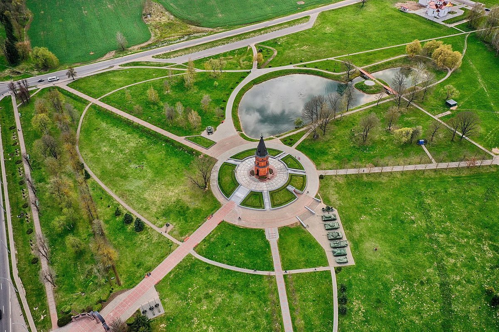
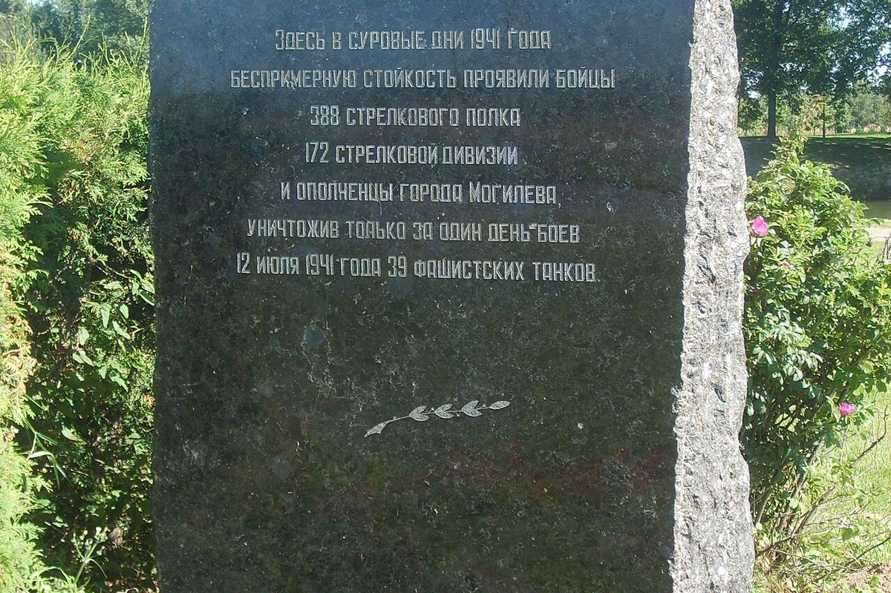

A field near Mogilev where, in July 1941, the city’s defenders destroyed 39 German tanks. Today it is a memorial and an open-air museum of armoured vehicles.
Buinichi Field near Mogilev is the site of one of the key battles in the defence of the city in July 1941. On 12 July 1941 a massive assault took place here; the defenders destroyed 39 German tanks.
The battle at the positions of the 388th Rifle Regiment was described by Konstantin Simonov and photographer Pavel Troshkin in the essay “A Hot Day” for Izvestia. The defence of Mogilev lasted 23 days.
Today the memorial complex is an open-air museum of armoured vehicles. It includes an arch, an alley, a chapel with memorial plaques, the “Book of Memory” and an exhibition of military equipment, including a German T-III tank.
One of the alleys is named after Konstantin Simonov and ends with a boulder. The field remains a place of memory for the defenders of Mogilev and one of the country’s most recognisable military memorials.

